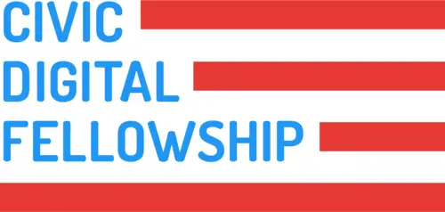

Erik Duxstad
Purdue Computer Engineering '22, Civic Digital Fellowship '21
Bio
Studying computer engineering at Purdue, contributing to open source and government, playing marimba.
Member of IEEE-HKN Beta Chapter and the Purdue "All-American" Marching Band.
Teaching Assistant for Intro to Digital System Design.
Currently looking for fast paced software and/or hardware internships that are focused on providing innovative and novel value to their end users.
In the Summer of 2022 I worked as a Software Engineering Intern at Garmin. I was a member of the Software HMI team in the AutoOEM devision, building a next-gen infotainment system for automotive manufacturers.

The Civic Digital Fellowship is the first-of-its-kind software engineering internship program that allows innovative students to solve pressing problems in federal agencies. I was selected as part of the Summer 2021 cohort to intern with the U.S. Census Bureau. As a Fellow, I engaged with members of the civic tech community through virtual site visits, mentorship, and professional development with organizations like the US Digital Service and TechCongress.
Projects
- Boilergrades.com
Open source tool to graphically display historical grade data of courses and instructors at Purdue. Created using Express, Vue, and Postgres.
- Motorola 68000 computer
Single board computer designed for the historic 68000 CPU. Uses a Lattice FPGA to interface with the CPU and peripherals, with a PS/2 port for input and a VGA port for display output. Tasked with schematic and PCB layout for the group project.
- Boilerexams.com
Study tool for Purdue curriculum. Worked with the creator to add materials for the 'Intro to C' programming course along with backend and development optimizations.
- GNOME Contributions
Several open source contributions to the GNOME desktop enviornment, the most popular linux shell. Merged pull requests into gnome-bluetooth and gnome-shell.
Links
Contact
You can contact me with my first name at (@) this domain or with my first name at (@) the educational institution linked above.